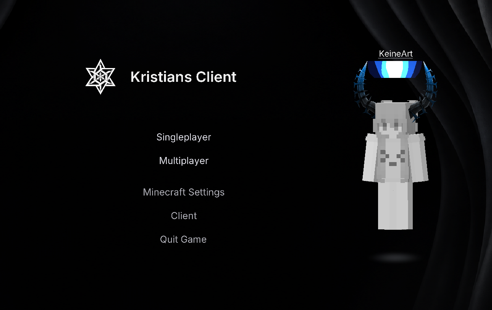

Minecraft,
directed differently.
A private visual client built around cinematic worlds, expressive cosmetics and an interface that feels designed instead of assembled.

Not a feature list.
See the client.
Actual captures from Kristian’s Client, from the custom landing screen to cosmetics and server utilities.
The whole client,
inside the page.
Search modules, expand panels and try the toggles. This browser recreation is generated from the current client categories.
Drag a panel by its header · Press + to expand · Click a module to toggle it
Made for more than
one kind of player.
Every visible category in the current build, from cinematic render effects to local utility and custom cosmetics.
Eight skies.
One world that never sits still.
Animated procedural skies, color-aware world lighting, atmosphere, fog tinting and optional bloom.
One JAR.
Your Minecraft.
Kristians Client runs on Minecraft 26.3 with Fabric Loader 0.20.1 or newer, Fabric API and Java 25.
- 01Download the releaseGet the current JAR directly from GitHub.
- 02Add it to FabricDrop it into your profile’s mods folder with Fabric API.
- 03Open the interfaceLaunch Minecraft and press K. Every bind is adjustable.